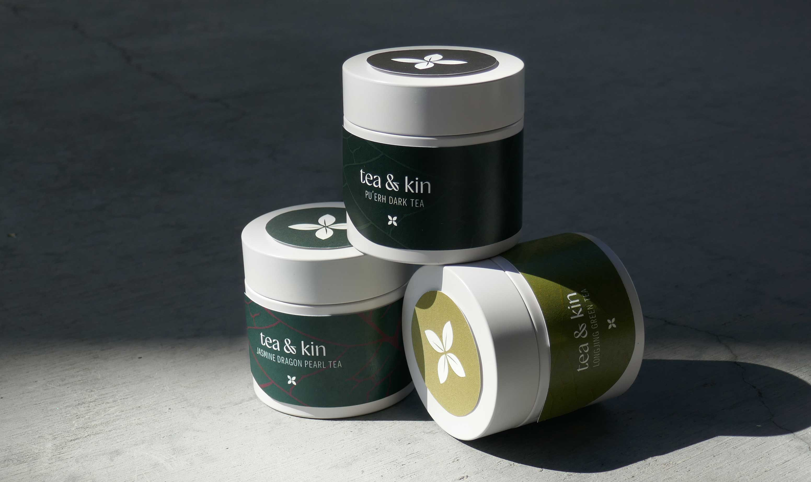
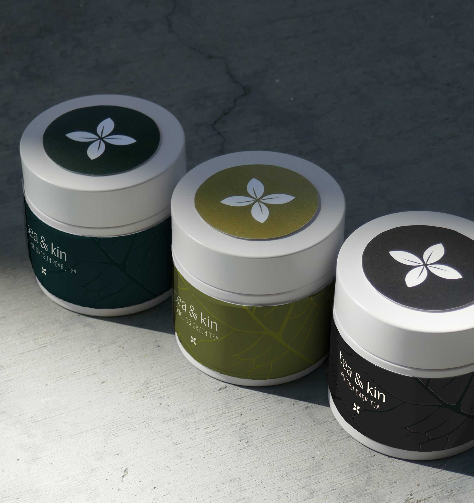
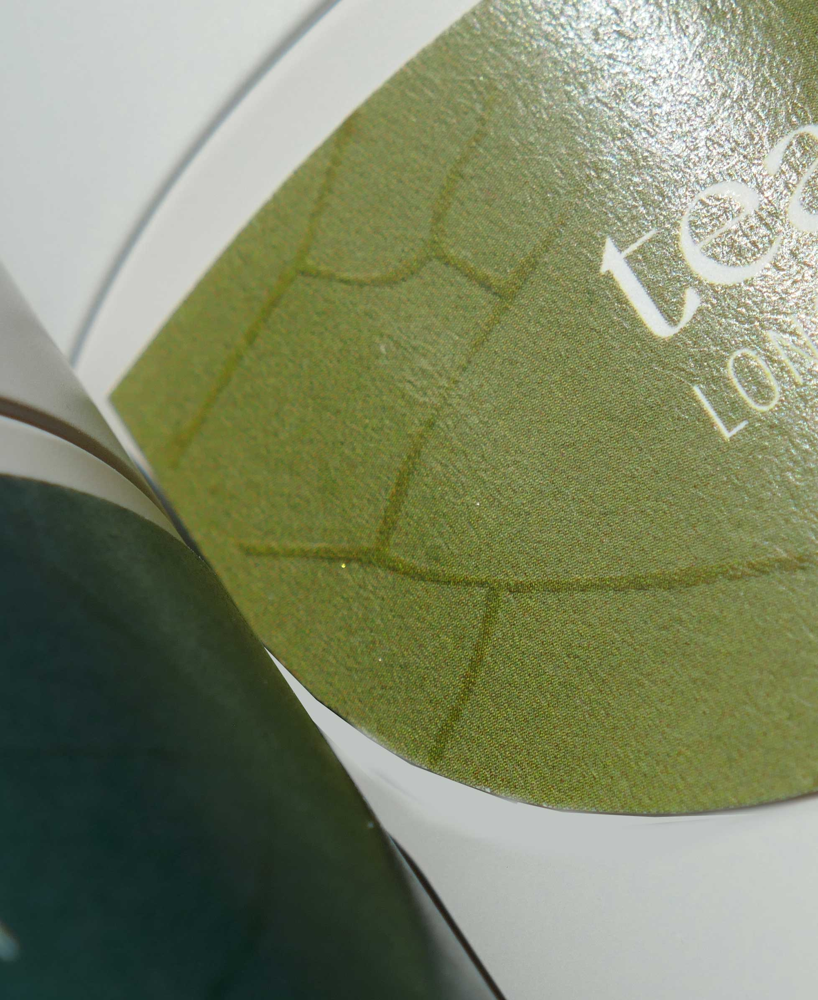
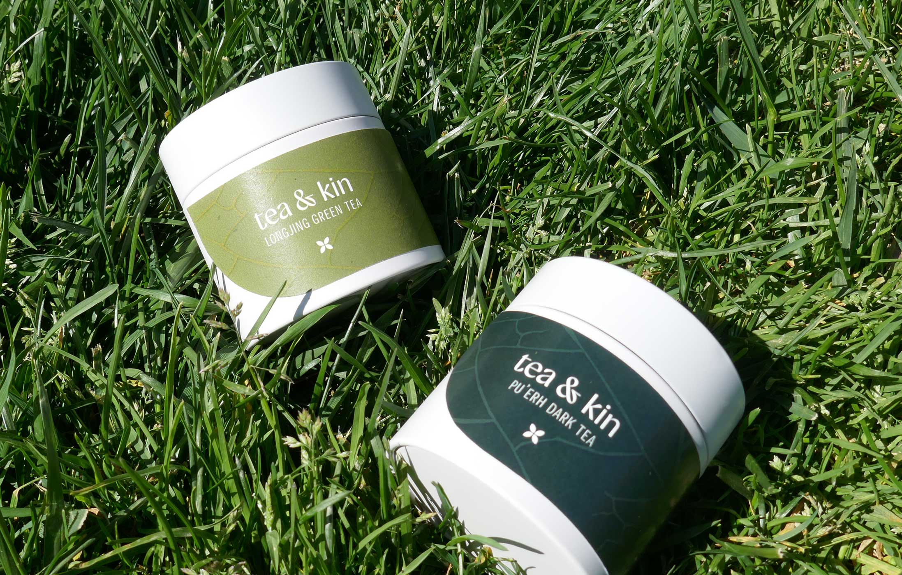
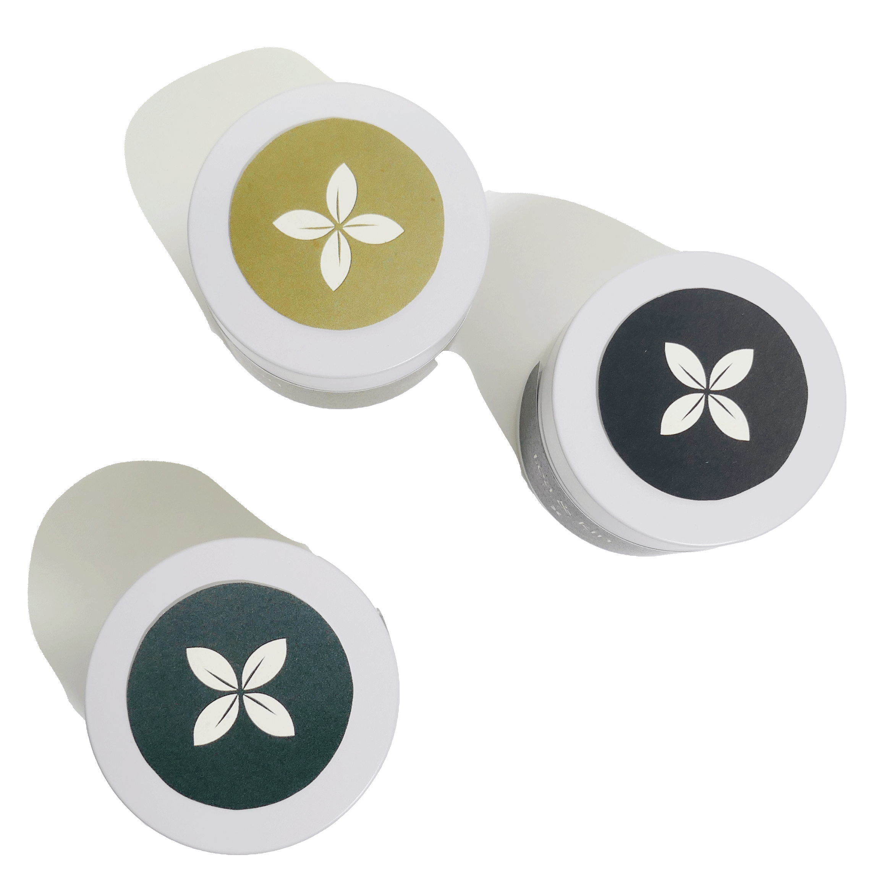
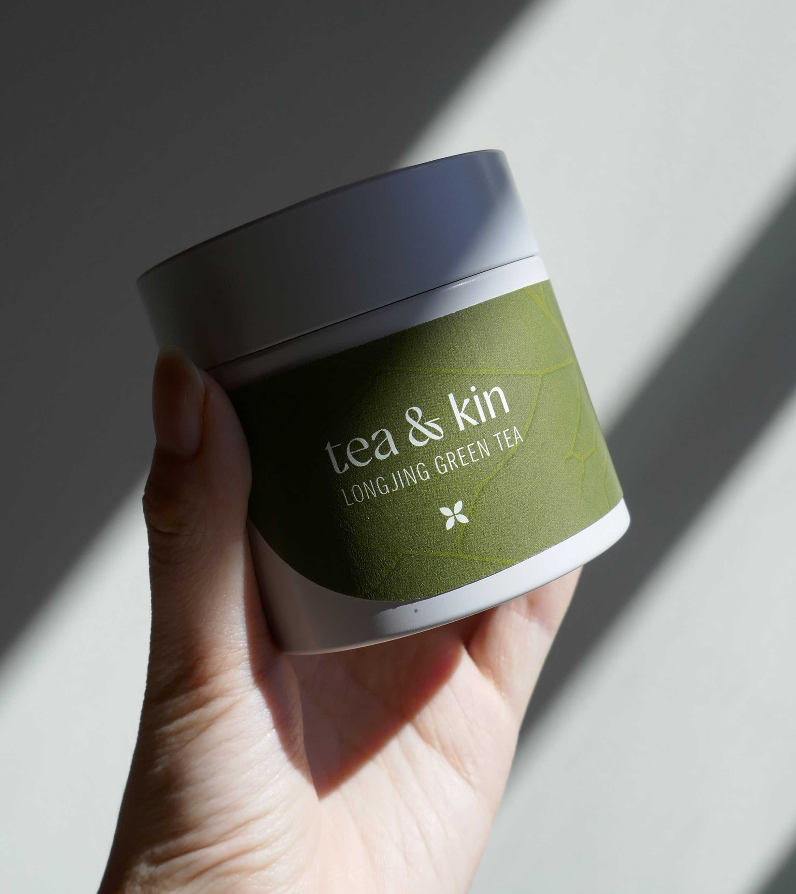
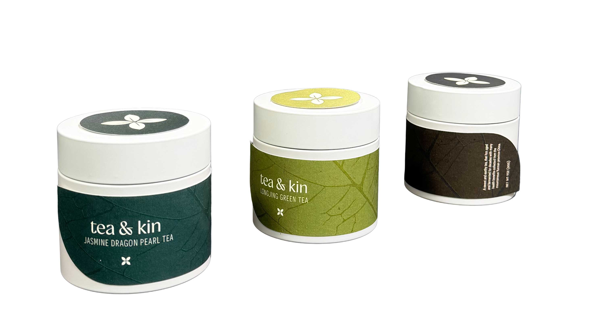

At tea & kin we believe that tea is more than a drink, it is an experience. Tea has a long history of bringing people together. Originating from China in the 12th century, through trade, it has become a staple in cultures all over the world. From China, Japan, India, Morocco, Britain, and so many more, tea is a symbol of bonding and conversation. It is also popular for its simplicity that provides many health benefits. Tea has become a bridge between cultures and people through generations. Tea & kin offers a wide selection of authentic, rich, and nutritious loose leaf teas that brings people together. Representing this philosophy, the design of the tea package is simplistic with a gentle elegance. Drawing inspiration from the product itself, the label resembles a leaf both in shape and with pattern. Each tea is distinguished by its color, consisting of colors from the forestry and mountainous landscape that the leaves came from. Tea & kin is a brand that captures the authenticity of its origin in a timeless and modern.
PROJECT INFO
Packaging Design
2026
TOOLS
Illustrator, Photoshop, Cricut







PROCESS
The process of this project was very hands-on compared to a lot of my previous projects. I was constantly toggling between the digital and physical realm because I believe that products and packaging are made to be experienced in the real world, so I can’t possibly stay strictly on my computer to see if it is working. I played with different typefaces and different treatments before starting on the label itself. One direction that I was very committed to for about half of the project was embossing the landscape of the different Chinese regions that the teas came from across the label. I learned to do this by hand with an x-acto knife and paper, essentially pushing the pattern through. Although I was attached to the concept, that didn’t stop me from exploring new avenues, which is how I came to the final design, with the leaf pattern. The process of this project taught me a lot about different craft and print treatments for physical packaging.